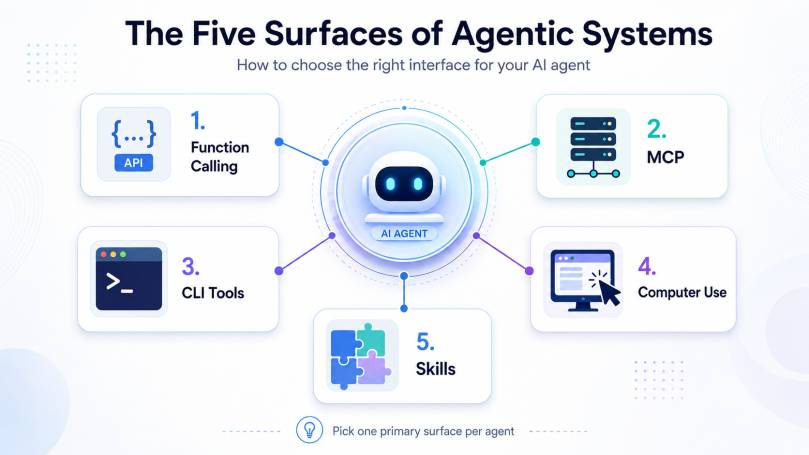

If you have built more than one AI tool in the past twelve months, you have noticed the same thing I have: the surface area of “how a model talks to systems” has exploded. Skills, MCP servers, CLI tools, Computer Use, function calling, declarative agents, custom engine agents, apps, actions, extensions, gems — every vendor uses a slightly different word for what looks like the same thing on a marketing slide. They are not the same thing. The trade-offs are real, the choice changes architecture, and picking the wrong one wastes weeks.
This post is the mental model I now apply by default when I sit down to build something agentic. It is opinionated. It is not a feature comparison. The goal is to help you decide which surface to reach for first, not to memorise the spec of each one.
I’ll cover seven surfaces (the original five, plus two that are too important to skip in 2026), map them across Anthropic, OpenAI, Microsoft, and Google terminology, and give you the decision tree I actually use.

The surfaces, in plain language
I’ll define each in the way I think about it, not the way the docs do.
1. Function calling — the original
You give the model a JSON schema for some functions. The model picks one and emits arguments. Your code runs the function and feeds the result back. This is what every modern frontier model supports natively: Anthropic calls it tool use, OpenAI calls it function calling (now with strict mode for guaranteed schema adherence), Google calls it function calling in the Gemini API. It is the lowest abstraction and still the most predictable.
Reach for it when you control the model client and the integration is small enough that wrapping it in a protocol is overhead. Don’t underestimate how far you can get with a dozen well-typed tools and a tight system prompt.
2. MCP — Model Context Protocol
Anthropic’s protocol that turns one-off function calling into a standardised tool-server architecture. You build a server once (tools, resources, prompts, sampling), and every MCP-aware host can talk to it. The list of hosts is no longer Anthropic-specific: OpenAI adopted MCP in early 2025, ChatGPT Apps run on MCP under the hood, Microsoft Copilot Studio supports MCP servers as a connector type, and IDEs like Cursor, Windsurf, and VS Code’s agent mode all speak it.
Two transports matter today: stdio for local servers running on the user’s machine, and Streamable HTTP (with OAuth 2.1) for hosted multi-user servers. The hosted variant is what makes MCP interesting at scale — one server, many tenants, browser-based auth.
Reach for it when the integration will be reused — multiple hosts, multiple users, multiple agents. The cost is one extra hop in the architecture and a slightly heavier deploy. The benefit is that your investment compounds across every AI client your team picks up.
Where MCP gets misused: building a single in-app agent and wrapping its three internal helpers as MCP servers. That is over-engineered. Use function calling there.
3. CLI tools — the surprise winner
I covered this in my earlier post on CLI tools beating MCP. Short version: when an agent runs in a Bash environment (Claude Code, the OpenAI Codex CLI, Cursor’s terminal agent, any terminal-based assistant), existing CLIs are already perfect tools. They have flags, structured output (often JSON via --output json), exit codes, manual pages, and decades of operational stability. You don’t have to build anything — you just have to write a good prompt.
Reach for it when the agent is a developer-facing assistant that already has a shell. Trying to wrap kubectl, az, gh, or pwsh behind a custom MCP server is reinventing infrastructure that already works. The exception: when the CLI’s output is too verbose for the context window, or when the CLI requires interactive prompts a model can’t navigate — then a thin MCP wrapper that returns trimmed JSON pays for itself.
4. Computer Use
Anthropic’s pattern (and now also OpenAI’s Computer Use in the Responses API / Operator, and Microsoft’s Computer Use in Copilot Studio) where the model sees a screenshot, decides where to click, and emits mouse and keyboard actions. Pixels in, actions out. This is the answer for systems that have no API — legacy enterprise tools, in-browser SaaS without OAuth, applications you cannot or will not script.
It is also the slowest, most expensive, and most unreliable surface of the seven. Use it when you must, never when you can use a tool with a stable schema. Two more points: security matters more here than anywhere else (prompt injection via screen content is real — see Anthropic’s writeups on Claude in Chrome), and observability is non-negotiable. If you can’t replay the screenshot stream when something breaks, you can’t debug it.
5. Hosted tools — code execution, retrieval, web search
This is the category the original five-surface model misses. Every major vendor now ships first-party tools you don’t have to implement: code execution sandboxes (Anthropic’s code execution tool, OpenAI’s code interpreter, Gemini’s code execution), retrieval over uploaded files (OpenAI’s file_search, Anthropic’s files API, Gemini’s File API), and web search as a model-side capability (Anthropic’s web_search_tool, OpenAI’s web_search, Gemini grounding with Google Search).
These look like function calls in the API but execute inside the provider’s infrastructure. You don’t write the function body. You toggle them on.
Reach for them when you’d otherwise be reinventing a sandbox, a vector store, or a search wrapper. The pricing is usually fair, the integration is one line, and the failure modes are well-documented. The catch: your agent now depends on the provider’s infrastructure for that capability, and switching models means rebuilding it. For anything truly mission-critical (legal-regulated retrieval, deterministic code execution), build it yourself.
6. Sub-agents as a tool
The pattern that exploded in 2025–2026: one agent calls another agent as if it were a tool. Claude Code subagents, OpenAI’s Agents SDK with handoffs, Microsoft’s multi-agent Copilot Studio orchestrations, LangGraph’s hierarchical graphs — all the same shape. The “tool” is another LLM with its own system prompt, tool set, and context window.
Reach for it when one agent’s context would otherwise overflow, when you want a specialist with a narrower toolset to handle a sub-task (e.g. a “research agent” with web search vs. a “writer agent” with no tools), or when you need a parallelisable sub-task. The cost is real: token usage multiplies, latency stacks, and debugging a five-agent chain is harder than debugging one agent with twenty tools. Start with one agent. Split only when you have evidence the single agent is failing on a specific seam.
7. Skills — the term that means four different things
This is the section that needed the most work. “Skill” is the most overloaded word in the agent ecosystem in 2026. Four distinct concepts share it:
Alexa Skills (Amazon, 2014): voice apps that respond to user intents. Largely a relic of the smart-speaker era, but Amazon still ships the SDK. If anyone in your meeting was building voice apps before 2020, this is what they hear when you say “skill”.
Microsoft Skills (Copilot Studio / Microsoft 365 Agents): Microsoft uses “skill” as an umbrella for two distinct things. Declarative agents in Copilot Studio are low-code integrations — you wire up triggers, knowledge sources, and actions in a designer. Custom engine agents built with the Microsoft 365 Agents SDK are code-driven, run on Azure, and let you control the model and orchestration directly. The older Bot Framework / Semantic Kernel also used “skill” (Semantic Kernel has since renamed them to “plugins”, but old docs persist). When someone at a Microsoft customer says “we built a skill”, ask which of these three they mean.
Anthropic Claude Skills (2025): a filesystem convention, not a network protocol. A skill is a folder containing a SKILL.md file (with a YAML frontmatter description) plus any supporting scripts, templates, or reference files. The model loads SKILL.md only when the task description suggests it’s relevant — progressive disclosure. The contents are instructions for the model on how to do something well: how to format a pptx, how to fill a PDF form, how to lay out a frontend component. Skills are not endpoints. They are reusable expertise bundles that the model unpacks on demand. Available in Claude.ai, Claude Code, and the Claude API.
OpenAI doesn’t use “skill” — but the closest analogues are Custom GPTs (a persona + instructions + actions + knowledge bundle, GPT Store distribution), GPT Actions (OpenAPI schemas wired to external APIs, the “function calling but published” surface), and the newer ChatGPT Apps announced at DevDay 2025, which are MCP servers paired with UI components and discoverable inside ChatGPT.
Google’s equivalents are Gems (Custom GPT-equivalent personas in Gemini) and Extensions (tool-equivalent integrations to Google services and third parties).
The concept of a “packaged capability you can publish and reuse” is real and useful. The naming is unfortunate. Always disambiguate in design docs and customer conversations.
Vendor terminology cheat sheet
Same concept, four names. Keep this table next to your architecture diagram.
| Concept | Anthropic | OpenAI | Microsoft | |
|---|---|---|---|---|
| Function calling | Tool use | Function calling (strict mode) | Function calling (in M365 Agents SDK) | Function calling |
| Tool-server protocol | MCP (created it) | MCP (adopted) | MCP (as connector) | MCP support in AI Studio |
| Hosted code execution | Code execution tool | Code interpreter | Python tool in Copilot Studio | Code execution |
| Hosted retrieval | Files API + search | file_search | Knowledge sources in Copilot Studio | File API |
| Hosted web search | web_search tool | web_search | Bing grounding | Google Search grounding |
| Computer Use | Computer use, Claude in Chrome | Computer Use / Operator | Computer Use in Copilot Studio | (Project Mariner, preview) |
| Packaged capability | Claude Skills | Custom GPTs / GPT Actions / ChatGPT Apps | Declarative agents / Custom engine agents / “Skills” | Gems / Extensions |
| Sub-agent pattern | Claude Code subagents, Agent SDK | Agents SDK / handoffs | Multi-agent Copilot Studio | (no first-party SDK yet) |
The decision tree I actually use
- Does the target system already have a stable API? Yes → function calling or MCP. No → Computer Use as a last resort.
- Will the integration be used by more than one host or by more than one team? Yes → MCP, hosted over Streamable HTTP. No → native function calling.
- Is the agent already a developer-facing CLI assistant with a shell? Yes → call existing CLIs from bash. Don’t build a tool layer.
- Do you need code execution, file search, or web search? Use the hosted tool first. Only build it yourself when compliance, determinism, or vendor lock-in justify the investment.
- Is this packaged know-how about how to do something, not how to reach a system? That’s a skill in the Claude sense — a
SKILL.mdbundle, not a tool server. Different surface, different problem. - Is your platform Microsoft Copilot? “Skill” is the marketing word; under the hood you’ll pick declarative agents (Copilot Studio) for low-code or custom engine agents (M365 Agents SDK) for full control.
- Is one agent’s context overflowing or is there a clean specialist seam? Then — and only then — split into sub-agents.
- Is the workflow visual or GUI-only? Computer Use, but invest heavily in observability. The screenshot traces are gold when something goes wrong.
Pitfalls I now avoid
Wrapping shell commands in MCP “because protocols are nice”. They are nice. They are also extra latency, an extra deploy target, and an extra failure mode. Default to native CLIs when the agent has a shell.
Treating Computer Use as a substitute for an API. If the API exists and is stable, use it. Computer Use exists for the cases where it doesn’t.
Mixing surfaces in one agent without a planner. An agent that has four MCP servers, eight native tools, hosted code execution, and a Computer Use channel will pick the wrong surface routinely. Pick a primary surface per agent; route to others only when the primary fails.
Confusing “skills” across vendors. Microsoft’s skills, Anthropic’s Claude Skills, OpenAI’s Custom GPTs, and the original Alexa Skills are four different concepts. Always disambiguate in design docs.
Reaching for sub-agents too early. Multi-agent looks impressive in architecture diagrams. It also multiplies token cost, latency, and debugging complexity. A single agent with a good tool set beats a sub-agent constellation in most cases I’ve shipped.
Building your own retrieval before trying the hosted one. A custom vector pipeline is six weeks of work. file_search or the Anthropic files API is one API call. Start hosted, migrate only when you’ve outgrown it.
Forgetting that Computer Use is a security surface. Screen content is untrusted input. A poisoned web page can hijack an agent the same way a malicious email can hijack a user. Treat every pixel like user input from the internet — because it is.
Where this is heading
The pattern I expect to win in the medium term: function calling at the model boundary, MCP at the tool-server boundary, hosted tools for the capability layer, CLIs and Computer Use as the actual execution layer, and skills (Anthropic-style bundles) for packaged expertise. Vendors will keep their own marketing terms — Microsoft’s “skills”, OpenAI’s “apps”, Google’s “extensions” — but the underlying architectures are converging on MCP faster than I expected a year ago.
The signal: OpenAI adopting MCP, ChatGPT Apps running on it, Copilot Studio supporting it as a connector, every IDE shipping an MCP client. The protocol has won the integration layer. What’s left to decide is which capabilities you build, which you host, and which you delegate to sub-agents.
If you remember nothing else from this post: pick one primary surface per agent, base it on whether the target system has a stable API, and reach for the heavier abstractions only when reuse, scale, or capability genuinely justifies them. Everything else is over-engineering with extra steps.